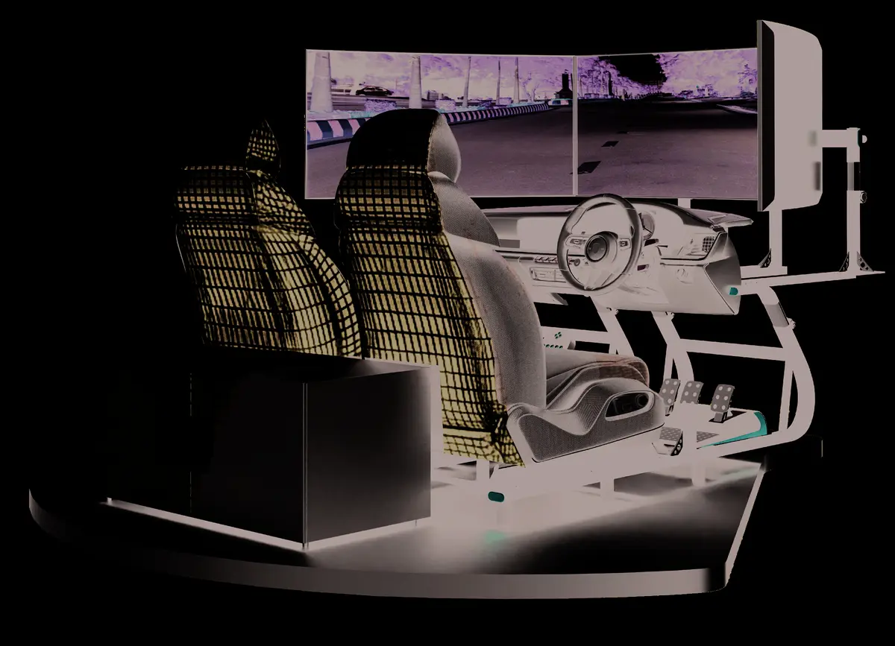
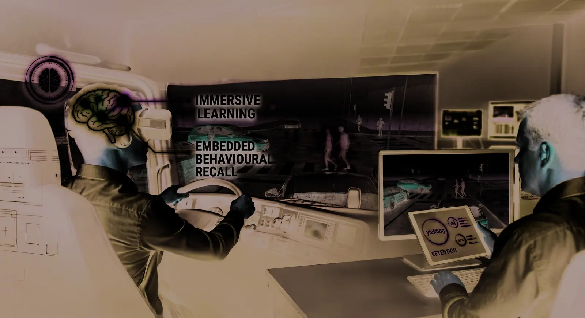
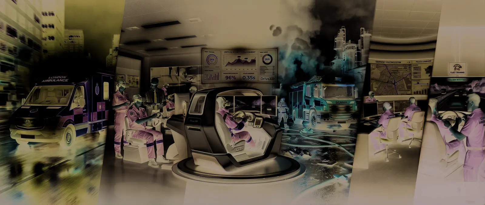
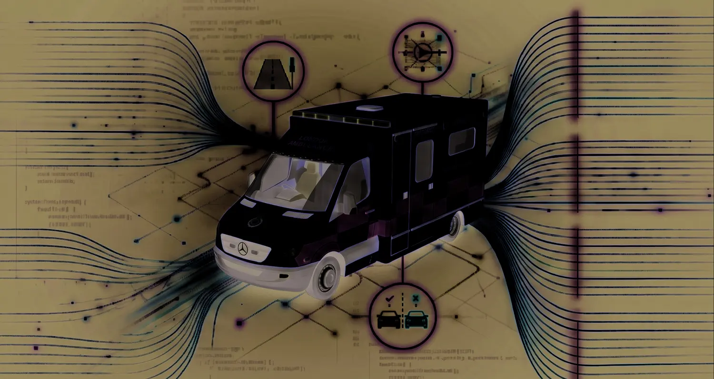

Limited scenario exposure
Critical hazards are difficult to reproduce safely and consistently.
EMERGENCY DRIVER TRAINING SIMULATOR
DriveXR develops, assesses and improves real-world blue-light driving competency in a safe, measurable and fully immersive environment.
THE INDUSTRY CHALLENGE
Emergency vehicle drivers work in unpredictable environments where split-second decisions affect public safety, patient outcomes and operational risk. Live-road training alone cannot provide repeatable exposure to every critical situation.
Critical hazards are difficult to reproduce safely and consistently.
Instructor judgement can vary without shared performance evidence.
Fuel, vehicle wear, road access and instructor deployment add pressure.
Traditional methods provide limited behavioural and decision data.

THE MXR SOLUTION
DriveXR bridges classroom theory and operational readiness through high-fidelity vehicle simulation, intelligent traffic, instructor-led intervention and objective performance analytics.
KEY FEATURES
Every part of the platform supports realistic practice, structured assessment and evidence-led improvement.
Realistic steering, braking, acceleration and road handling build confident vehicle control.
Train across urban, rural, motorway and dual carriageway environments.
Unpredictable road users and evolving hazards strengthen situational awareness.
Configure scenarios, inject hazards and monitor performance as training unfolds.
Practise safe and lawful emergency response under lights and sirens.
Replay sessions to support reflection, coaching and learning retention.
Track behaviour, reactions, compliance and progress through one dashboard.
Deploy in a physical cab, multi-screen configuration or immersive VR.
HOW IT WORKS
Select routes, weather, hazards, scenario objectives and learner profiles.
Learners complete live emergency response scenarios with instructor oversight.
Use analytics, replay and instructor observations to guide the next session.
TRAINING INTELLIGENCE BUILT IN
DriveXR converts every session into structured evidence for instructors, learners and training managers.

USE CASES
DriveXR adapts to operational priorities, training pathways and assessment requirements.

Blue-light response, onboarding and return-to-duty assessment.
Paramedic driver preparation and simulation-based competency assessment.
Emergency vehicle control and incident response driving.
Response vehicle awareness and risk-based route planning.
Advanced defensive driving programmes delivered consistently at scale.
BENEFITS & ROI
Build capability while reducing the cost, exposure and inconsistency of live-road training.
Practise dangerous scenarios without exposing people or vehicles to live-road hazards.
Reduce fuel use, vehicle wear and dependence on instructor deployment.
Repeat scenarios and target specific skill gaps with structured feedback.
Provide consistent training across cohorts, sites and service locations.
WHAT'S INCLUDED
DriveXR combines the physical driving experience, scenario engine, instructor tools and data layer required for structured emergency driver training.
Discuss deployment →
PROOF OF DELIVERY
A DriveXR deployment supported emergency driver competency development with the goal of improving preparedness and reducing live-road risk exposure.
SEE DRIVEXR IN ACTION
Book a live demonstration tailored to your service, training environment and deployment needs.